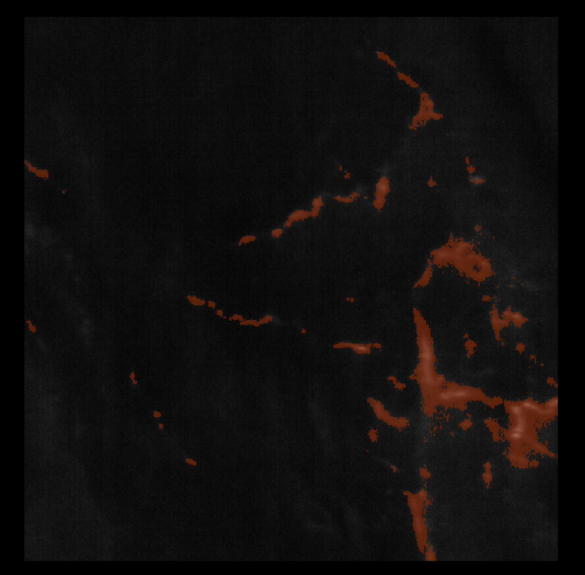
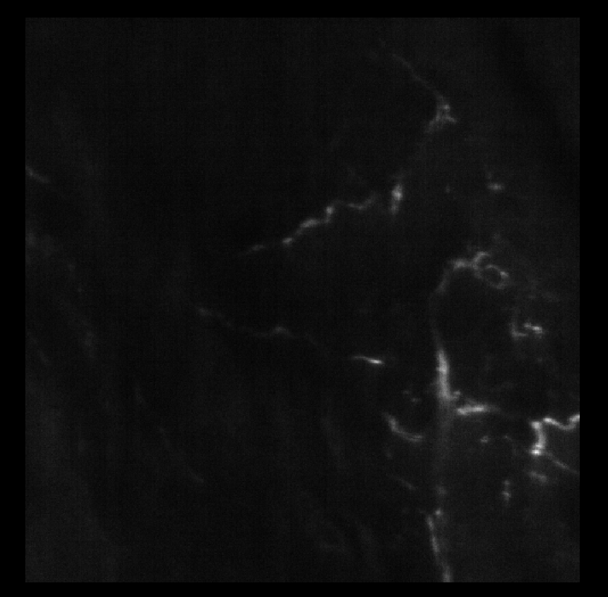

Segment Fibers¶
This task segments fibers revealed by the PGP9.5 fluorescence. It takes as input a multi-channel OME-Zarr image containing the PGP9.5 channel and outputs the fiber mask as a label in the same OME-Zarr image.
Parameters¶
In this section, we describe the parameters of the task. Some parameters are recommended to be set and finetuned per run, others are optional. The optional parameters are mainly meant for troubleshooting or finetuning, when the default analysis leads to undesired results.
Background Percentile (recommended)¶
What it does
This parameter controls the threshold at which the background is set. Image intensities below this threshold are removed from the image to reduce background noise.
Why it matters
For this task, the background threshold is calculated locally for each pixel, hence it is more meant to enhance the contrast of the fiber signal rather than removing global background noise. Regarding the global background, it is better to finetune the Fiber Percentile parameter to ensure only fibers are segmented out.
How to choose
- In most cases, the default value is sufficient
- If the results are not satisfactory (fibers too thick, not well defined), try to increase the threshold by 10
Here is an example of a too big background surrounding the fibers:


💡 Tip
This parameter is tightly linked to the Fiber Percentile parameter. Finetuning the two parameters can lead to better segmentation of fibers.
Fiber Percentile (recommended)¶
What it does
This parameter controls the threshold at which the fibers are segmented. Image intensities above this threshold are selected as fibers.
How to choose
Depending on the strength of the PGP9.5 signal and the amount of the background noise, this parameter needs to be adjusted depending on the current case. The full range of 50-100 can be explored to find the best value.
- In most cases, high values are preferred (>90) to ensure only fibers are segmented out.
- The range of valid values is 50-100.
- Small contrast between fibers and background -> increase fiber threshold
- High contrast -> decrease fiber threshold to catch also fainter fibers
💡 Tip
This parameter is tightly linked to the Background Percentile parameter. Finetuning the two parameters can lead to better segmentation of fibers.
Min Fiber Size (optional)¶
What it does
This parameter controls the minimum volume size of the fibers. It is expressed in um3. Segmented elements that have a volume smaller than this threshold are removed.
Why it matters
It can be useful to remove small bright artifacts that are not fibers but of similar intensities.
How to choose
- In most cases, the default value is sufficient
- If there is a lot of bright artifacts, it can be useful to increase this value
Max Fiber Size (optional)¶
What it does
This parameter controls the maximum volume size of the fibers. It is expressed in um3. Segmented elements that have a volume bigger than this threshold are removed.
Why it matters
Depending on the background noise, there can be a large volume of high intensity that is segmented alongside the fibers that comes from the epidermis or other structures. Rather than increasing the fiber threshold, it can be useful to simply set a maximum volume size of the fibers to remove such elements as they are likely to be bigger than the fibers.
How to choose
- In most cases, the default value is sufficient
- If a large volume of high intensity is segmented alongside the fibers, try to decrease this value to remove it
- In case a large fiber network is clearly absent from the fiber mask, try to increase this value to avoid wrongly removing the fibers
Correct Halo (optional)¶
What it does
This parameter controls whether to correct or not for fiber halo in the Z direction. The fiber halo is the bright signal halo that can surround the fibers due to imaging.
Why it matters
If the fibers have a very high signal, it can be difficult to segment out the halo which leads to thick fibers, and sometimes even wrongly connect fibers across Z that are not normally related.
How to choose
- In most cases, the halo correction is not needed and the default value is sufficient
- If the fibers are too thick, try to set this parameter to
True
Lectin Factor (optional)¶
What it does
This parameter controls the strength of the multiplicative factor that is applied to the Lectin channel before it is subtracted to the PGP9.5 channel. This is done to remove background intensity.
Why it matters
The PGP9.5 channel is often affected by the sample background intensity. Given that the Lectin channel is also affected by this signal background but does not have any fiber signal, it can be used to remove the sample background signal from the PGP9.5 channel.
How to choose
- In most cases, the default value is sufficient
- If there is still some overall sample signal in the PGP9.5 channel, try to increase this value to remove it further
Correct Epidermis (optional)¶
What it does
This parameter controls whether to correct for a strong signal in the upper part of the epidermis.
Why it matters
It can happen that the epidermis shows a strong signal that is almost of the same intensity as the fibers. It is therefore difficult for the algorithm to distinguish between the epidermis and the fibers using threshold-based approaches. With this parameter, the algorithm will try to correct for this signal by segmenting the epidermis and lowering the signal in this region.
How to choose
- In most cases, it is not necessary to set this parameter to
True. - If the results are not satisfactory (epidermis segmented with the fibers), try to set this parameter to
True
Here is an example of a too strong signal in the epidermis region:

And the improvement using this parameter:

Analysis Resolution Level¶
What it does
This parameter controls which resolution of the OME-Zarr multi-resolution pyramid is used to detect the Dermis–Epidermis junction.
OME-Zarr images are stored as a multi-resolution pyramid:
- level 0 → full resolution (largest, most detailed)
- higher levels → downsampled versions (smaller, faster)
Why it matters
Using a lower resolution:
- uses less memory
- runs faster
- is usually sufficient and even better due to intensity averaging to detect the surface shape
Using a very high resolution:
- increases RAM usage
- may cause the task to fail on large datasets
- might be counterproductive, as a slight downsampling reduces noise and improve fiber detection
How to choose
- In most cases, the default value is sufficient
- If your image is too small (less than 1G) → keep the default value
- If your image is large or your computer runs out of memory → increase the resolution level
Local Run Command¶
python run_segment_fibers.py